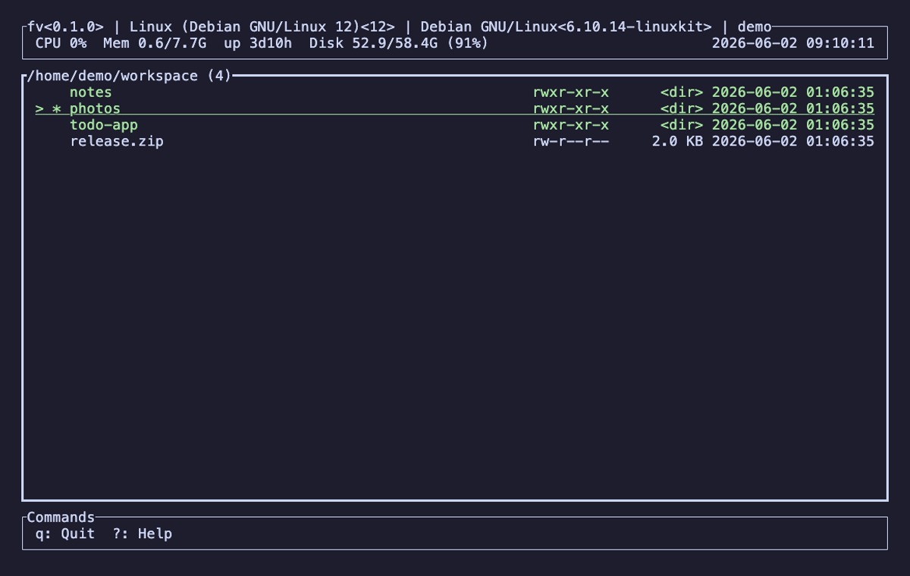
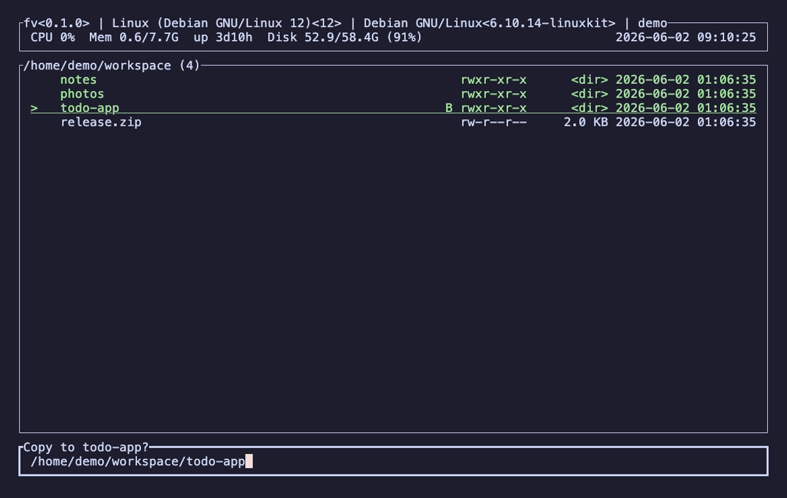

▷_
ターミナルで実行
GUI は不要。SSH 先のサーバーでも手元のマシンでも、ターミナルさえあれば同じ操作感でファイルを扱えます。

GUI は不要。SSH 先のサーバーでも手元のマシンでも、ターミナルさえあれば同じ操作感でファイルを扱えます。
Rust で実装し、起動も操作もキビキビ。大きなディレクトリやファイル操作中もキーボード操作が引っかかりません。
見やすい一画面に、ファイル操作・プレビュー・grep・ブックマークなど必要な機能を凝縮。覚えることは少なく、できることは多い。
macOS (Apple Silicon) / Linux (x86_64)
brew tap pkshimizu/tap
brew install fvお使いのプラットフォームのアーカイブをダウンロードし、展開して fv を PATH の通った場所に置きます。
# macOS (Apple Silicon)
tar xzf fv-aarch64-apple-darwin.tar.gz
# Linux (x86_64)
tar xzf fv-x86_64-unknown-linux-gnu.tar.gz
mv fv /usr/local/bin/ファイル一覧を中心に、操作・検索・表示まで、ファイル管理に必要な機能を網羅しています（括弧内はキー）。
カーソルでファイル/ディレクトリを移動し、Enter で開く・ディレクトリへ入る、Backspace で親へ戻ります。ディレクトリ履歴の前後移動やホームへの移動にも対応。ヘッダーには現在のパス・ディスク使用量・システム情報・時刻を常時表示します。

コピー・移動・削除・リネーム・ディレクトリ/ファイル作成に加え、Zip の圧縮・解凍にも対応。コピーや移動などの長時間処理は進捗表示付きの非同期ジョブとして実行され、Esc でいつでも中断できます。選択中のパスはクリップボードへコピー（Yank）できます。

テキスト・画像・オーディオのプレビュー（オーディオは再生/シーク対応）、ディレクトリ構造のツリー表示、配下を検索してヒットへ飛べる Grep、入力中に絞り込むインクリメンタル検索、ディレクトリへ一気に移動する Jump を備えます。ファイル情報・属性のパネルも開けます。

よく使うディレクトリをブックマークに登録して素早く移動。現在のディレクトリでシェルを起動したり、任意のコマンドを実行することもできます。設定パネルやヘルプもキー一発で開けます。